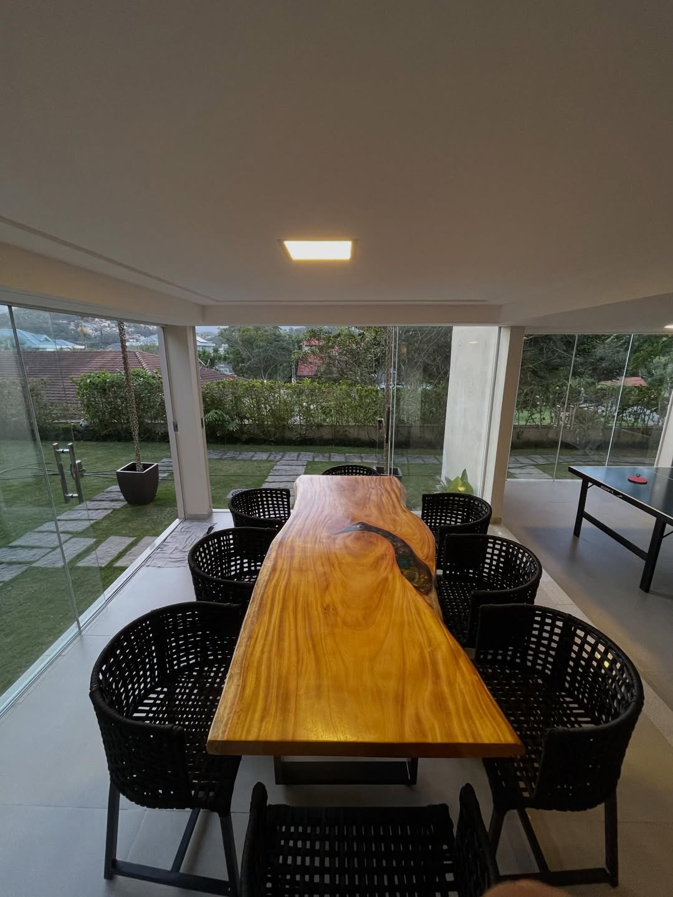
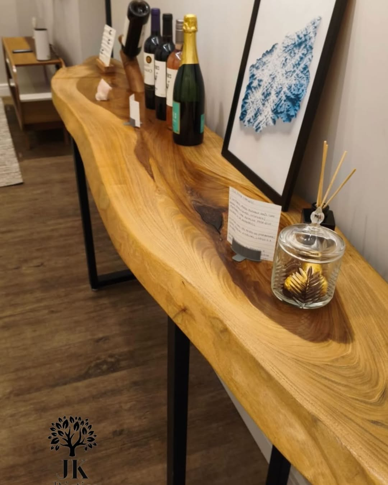
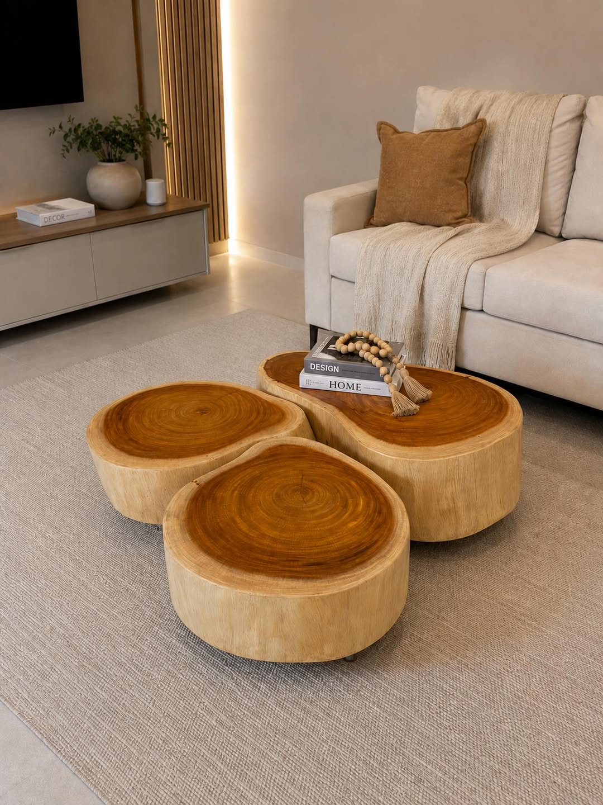
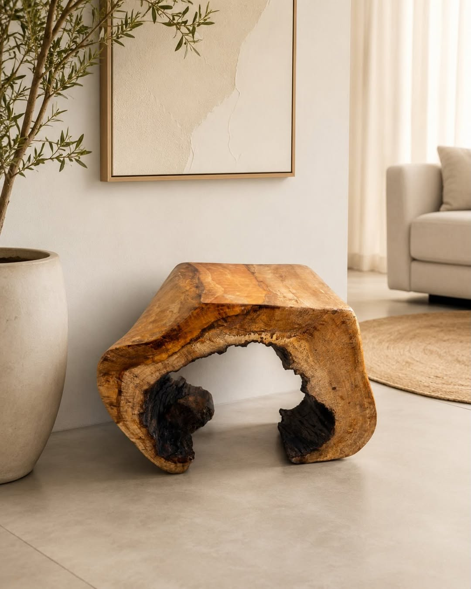
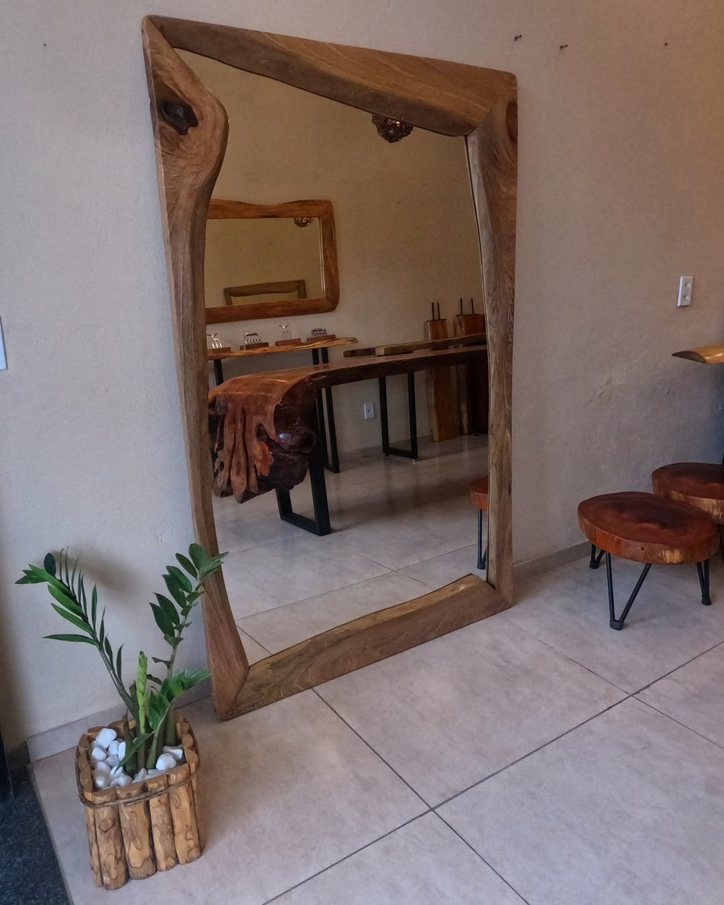

Mesas
Mesa de Jantar Rústica Maciça
Uma peça imponente que se torna o centro das atenções em qualquer sala de jantar. Fabricada artesanalmente com madeira reciclada, respeitando os veios e as marcas do tempo de forma sofisticada.
- MaterialMadeira reciclada (espécie conforme o lote)
- AcabamentoCera natural ou verniz fosco
- MedidasSob consulta, conforme as pranchas disponíveis
- DisponibilidadeConsulte o estoque de toras e pranchas
- EnvioPara todo o Brasil
Gostou desta peça?
Por trabalharmos com madeira reciclada, cada peça é única. Entre em contato para verificar as pranchas disponíveis e solicitar um orçamento com medidas personalizadas.
Consultar pelo WhatsAppVocê também pode gostar



